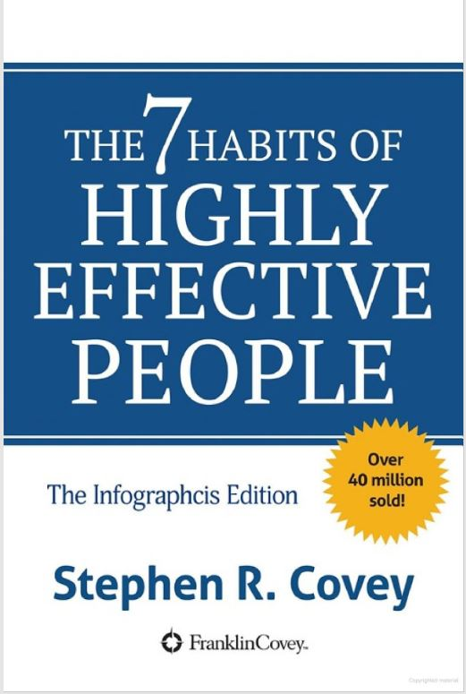
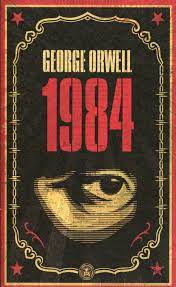

I have been running projects and implementing bussiness solutions for more than '20 years'. I am doing the Le Wagon course as part of my Mancosa certificate.
Github Profile|
The Monk Who Sold His Ferrari is a self-help book by Robin Sharma, a writer and motivational speaker. The book is a business fable derived from Sharma's personal experiences after leaving his career as a litigation lawyer at the age of 25. |
|
|  | The 7 Habits of Highly Effective People by Stephen R. Covey is a self-improvement book. It is written on Covey's belief that the way we see the world is entirely based on our own perceptions. In order to change a given situation, we must change ourselves, and in order to change ourselves, we must be able to change our perceptions. |
|  |
1984 author George Orwell. Nineteen Eighty-Four (also stylised as 1984) is a dystopian social science fiction novel and cautionary tale written by English writer George Orwell. The story takes place in an imagined future, the year 1984, when much of the world has fallen victim to perpetual war, omnipresent government surveillance, historical negationism, and propaganda. Great Britain, known as Airstrip One, has become a province of the totalitarian superstate Oceania, ruled by the Party, who employ the Thought Police to persecute individuality and independent thinking.[5] Big Brother, the dictatorial leader of Oceania, enjoys an intense cult of personality, manufactured by the party's excessive brainwashing techniques. The protagonist, Winston Smith, is a diligent and skillful rank-and-file worker at the Ministry of Truth and Outer Party member who secretly hates the Party and dreams of rebellion. He expresses his dissent by writing in a diary and later enters into a forbidden relationship with his colleague Julia and starts to remember what life was like before the Party came to power. |